Comprometidas con la Humanización de la Salud Femenina
Somos un equipo de mujeres unidas por la sensibilidad, el compromiso y el deseo profundo de acompañar con respeto y conciencia los procesos vitales de otras mujeres. En Almatriz, cada una aporta una visión esencial desde su experiencia profesional y personal.
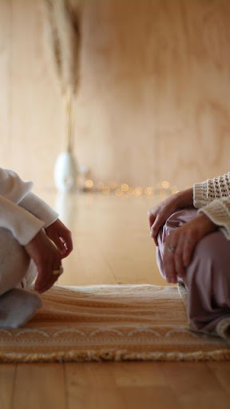
Nuestro Proyecto
Almatriz nace para ser un aporte significativo en la humanización y personalización de la atención en salud sexual y reproductiva. Con más de 10 años de experiencia, nuestro enfoque integra la sabiduría tradicional con el rigor científico y el activismo por los derechos humanos.
10 Años de Experiencia
Institucionalidad y respaldo profesional impulsando el cuidado primal.
"Nuestro propósito es transformar la forma en que se acompaña la vida: promoviendo vínculos respetuosos, prácticas basadas en evidencia y una comprensión profunda de los procesos vitales de las mujeres."
A través de la formación y el acompañamiento psicoafectivo, entregamos a las mujeres el soporte necesario para transitar sus procesos vitales con respeto y autonomía, complementando el trabajo de profesionales de la salud desde una perspectiva integral con enfoque de género y derechos.
Equipo Directivo
Tania Sáez Galaz
Dirección Pedagógica
Trabajadora Social y Doula. Con 11 años de experiencia, se dedica a dirigir la escuela de doulas, asegurando que cada formación esté basada en el cuidado y la autonomía femenina.
Carla Zarate
Gestión Administrativa y Proyectos
Psicóloga y Doula Especialista en Acompañamiento Perinatal. Coordina la gestión administrativa y desarrolla proyectos colaborativos para mejorar la atención a procesos femeninos.
Javiera Venegas Vilches
Coordinación y Gestión comunicacional
Terapeuta Holística, Doula y Social Media. Coordina las comunicaciones y el funcionamiento general, apoyando la formación de nuevas doulas y la construcción de comunidad.
Nuestra Misión
Ser un espacio de formación y acompañamiento que inspire procesos de transformación profunda, promoviendo el bienestar integral y el reconocimiento de la sabiduría corporal desde la empatía y el sostén mutuo.
Nuestra Visión
Ser una organización feminista referente en formación y acompañamiento psicoafectivo, impulsando la transformación de la salud sexual y reproductiva desde una mirada humana y basada en derechos.
Nuestro Propósito
Acompañar la transformación de las experiencias vitales integrando cuerpo, conciencia y comunidad, para que cada mujer se sienta validada y empoderada para habitar su historia con autonomía.
Equipo Almatriz
Libertad Méndez
Ginecóloga y es parte del equipo curricular de la escuela.
Bárbara Núñez
Matrona, y parte del equipo curricular de la escuela.
Ro Sepúlveda
Doula del equipo Almatriz y encargada de la asistencia en los módulos presenciales.
Equipo Docente
Libertad Méndez Núñez
Ginecóloga feminista y activista por los derechos sexuales reproductivos
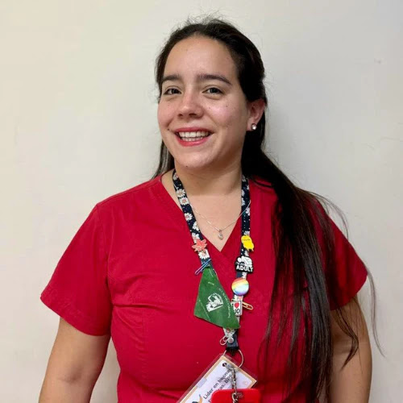
Francisca Pérez Dávila
Matrona especializada en ginecología natural y fertilidad consciente, diplomada en sexualidad transdiciplinaria
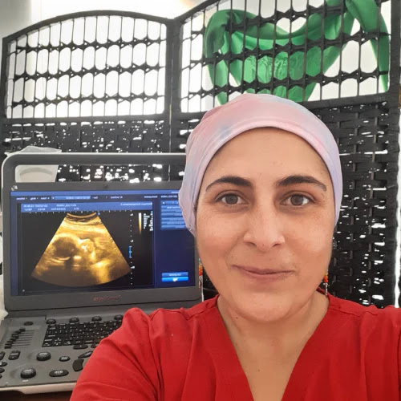
Bárbara Núñez Zúñiga
Matrona especialista en parto en casa, ecografista, perteneciente al gremio Maternas Chile
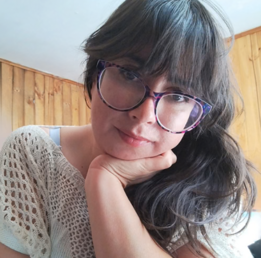
Fabiola Yañez Vega
Kinesióloga, doula y directora de la Fundación Observatorio de Violencia Obstétrica Chile
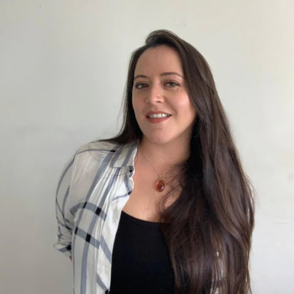
Daniela González González
Ingeniera en alimentos, Doula con especialidad en medicina de placenta, y activista de Parirnos Chile
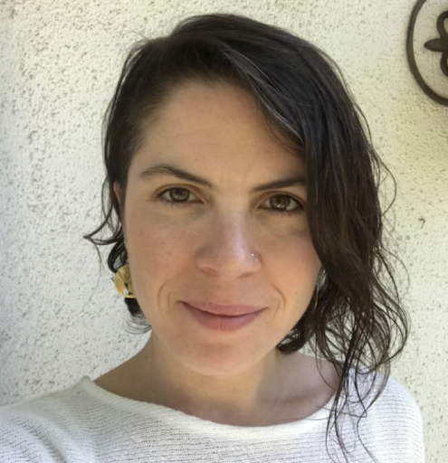
Raiyén Rozzi Zunino
Socióloga, psicoterapeuta Gestalt, Doula y fundadora de duelo y Arcoíris
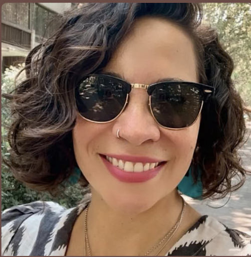
Les Monárdez Aguirre
Actriz, instructora de yoga y doula especialista en medicina de placenta
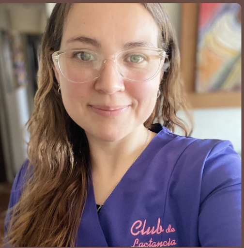
Macarena Quezada Latorre
Doula y asesora de lactancia. Fundadora de El Club de Lactancia
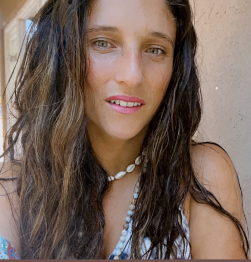
Rosario Yañez Ruiz Tagle
Profesora de Artes, ilustradora y fotógrafa de maternidades
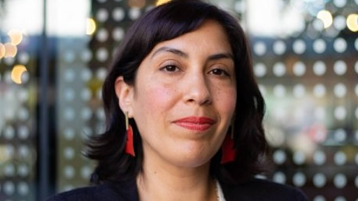
Yani Madariaga
Psicóloga Clínica Perinatal
Loreto Vargas
Ginecóloga y master en sexología y salud sexual
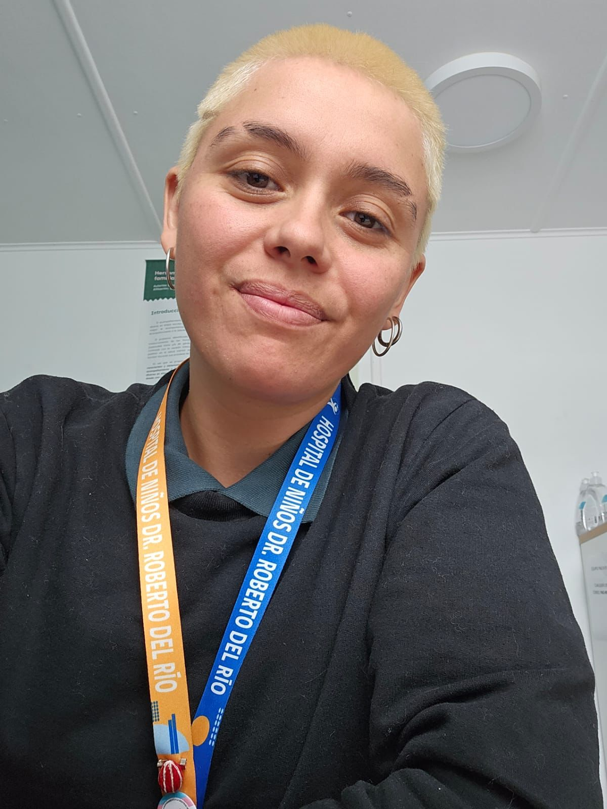
Ro Sepúlveda
Trabajadora social, doula y educadora popular
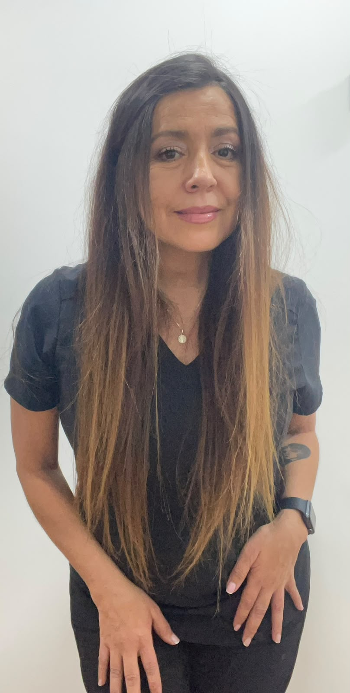
Andrea Torres
Matrona de partos
"El acompañamiento es un arte: implica estar presente de manera significativa, respetando la autonomía y el poder interior de quien es acompañada."— Michel Odent
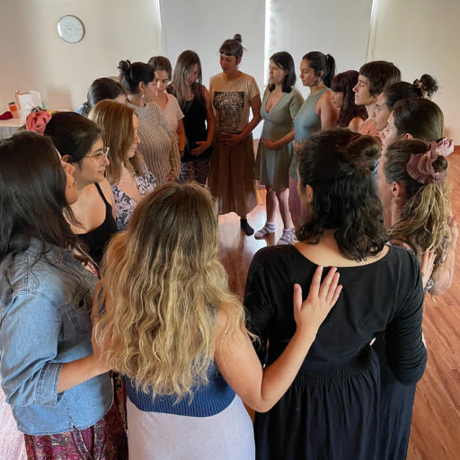
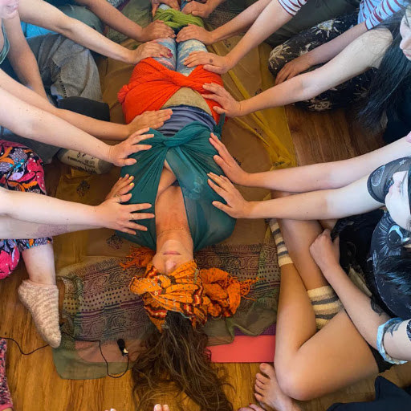

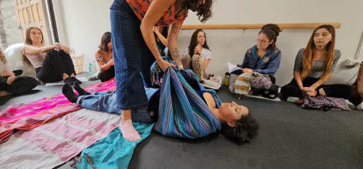
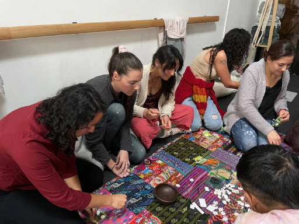
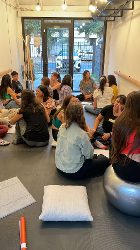
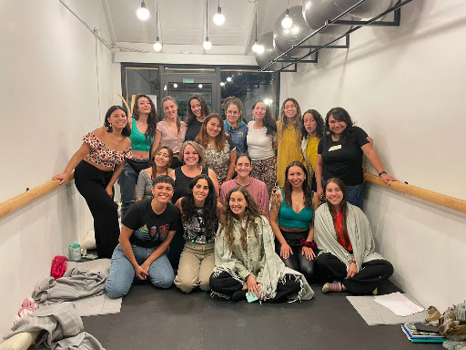
Tejiendo Redes de Cuidado y Cambio
"Ser doula en Almatriz significa formar parte de una red vibrante y transformadora de mujeres que acompañan, sostienen y promueven el respeto por los procesos vitales femeninos. En Almatriz, creemos que la sororidad y el feminismo son nuestras guías para construir una atención psicoafectiva que transforme y dignifique la salud sexual y reproductiva en Chile."
¿Te gustaría formarte como Doula?
Sigue tu llamado a acompañar procesos de vida. Nuestra formaciones 2026 y 2027 está abierta para quienes deseen integrar ciencia, cuerpo y conciencia.